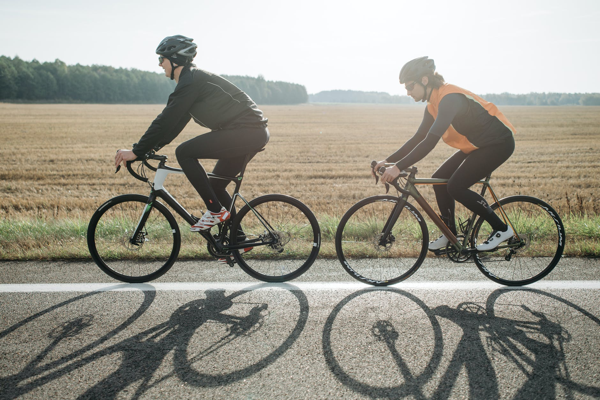
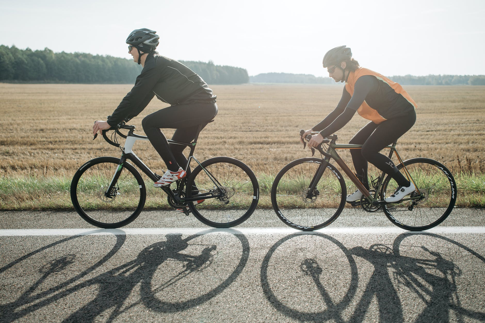

Humans have been trying to predict the future since long before the Magic 8 Ball was invented. Divination, often using bones and entrails, was a common practice in the ancient world, and perhaps even earlier. Since then, it's seemed like just about any handy object lying around—books, chickens, even cheese—has been used to attempt a glimpse at upcoming events, leading to a host of compound words formed with the suffix -mancy (which can be traced back to the Ancient Greek for "seer" or "prophet"). Here are some of the more intriguing forms of historical divination—some may even still be practiced today, depending on who you ask—from the widespread and better known to the more delightfully obscure.
- Do not add mileage too quickly.
- Ice for 15 minutes after every long run.
- Stretch before AND after your runs!
- Cross train in addition to running.
- Change your shoes every 400-500 miles run.
Especially if you have run higher mileage in the past, it may be tempting to run the same amount of distance. However, if you go out too hard and too fast, you put yourself at risk of getting an injury.
For shorter runs, you do not need to ice.
Most people skip out on this, but if you do not stretch before running, you are essentially running on tight muscles which can put you at high risk for injury. Stretching after runs is also important because it lowers the heart rate and helps eliminate the build up of lactic acid in muscles.
Especially if it is strength training. I like to weight lift or cycle.
Running is a high impact sport, especially at longer distances. For best fit, be sure to visit a running store to get properly sized.
 

Images courtesy of Pexels.com